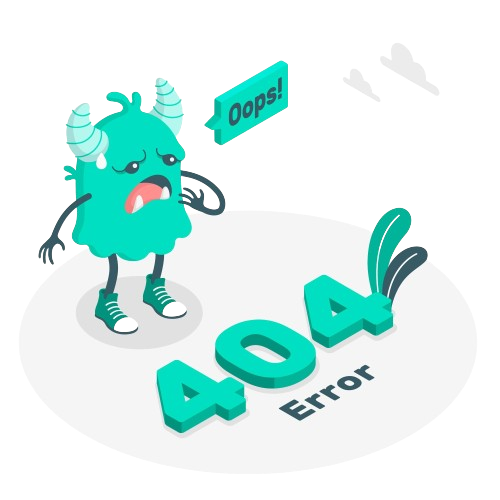

<p
  class="text-white h-screen pt-20 flex items-center justify-center flex-col gap-4"
>
  

  <button
    (click)="goBack()"
    class="text-lg bg-[#00DFC2] text-white px-3 py-1 rounded-md"
  >
    Back to last page
  </button>
</p>
